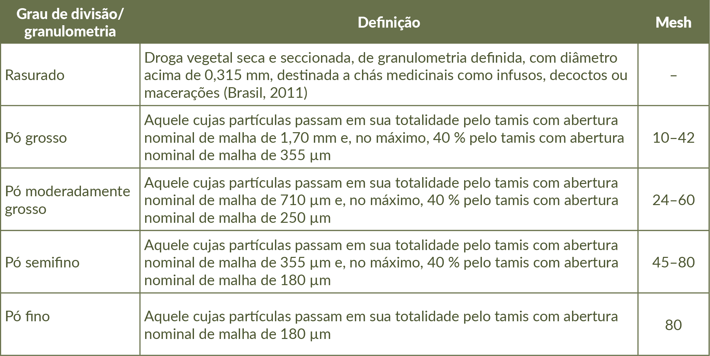

A droga vegetal é triturada ou pulverizada com auxílio de moinhos para reduzir o tamanho das partículas até chegar ao ponto de pó. Observe a tabela.
Grau de divisão, tamanho de partícula e do orifício do Tamis.

Fonte: Adaptado da Farmacopeia Brasileira, 7ª edição (BRASIL, Anvisa, 2024).
Tamanho das partículas: é o grau de divisão ou granulometria, que é expresso pela referência à abertura nominal da malha do tamis utilizado. Os tamises empregados são de aço inoxidável ou latão, não sendo permitido o revestimento dos fios (Brasil, Anvisa, 2024).